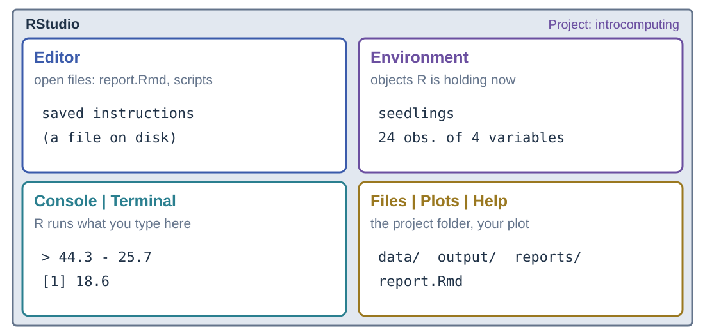
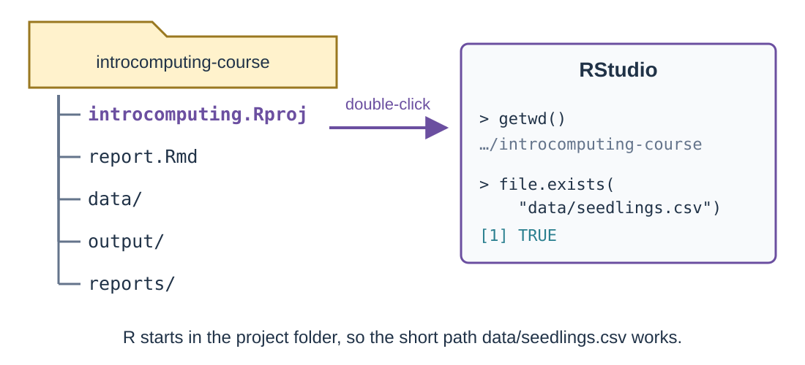
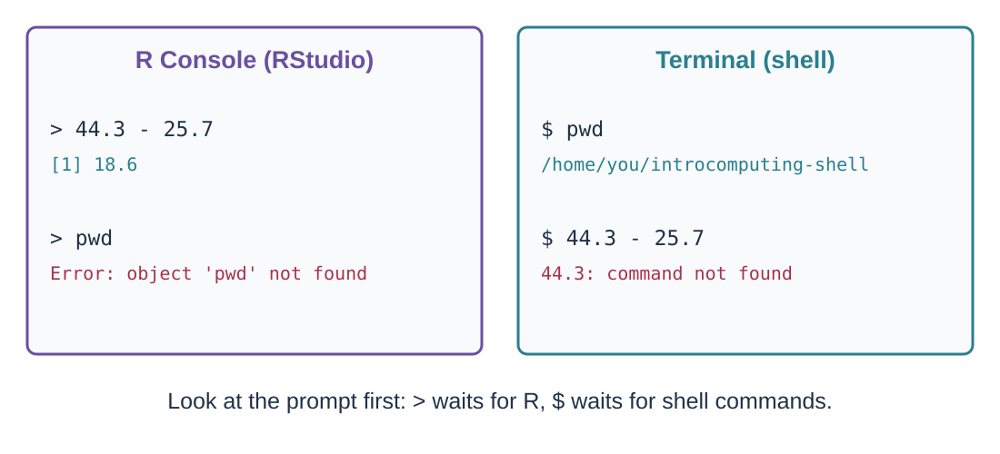
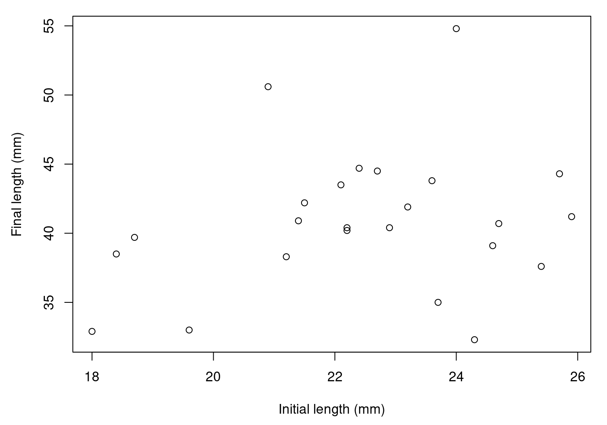
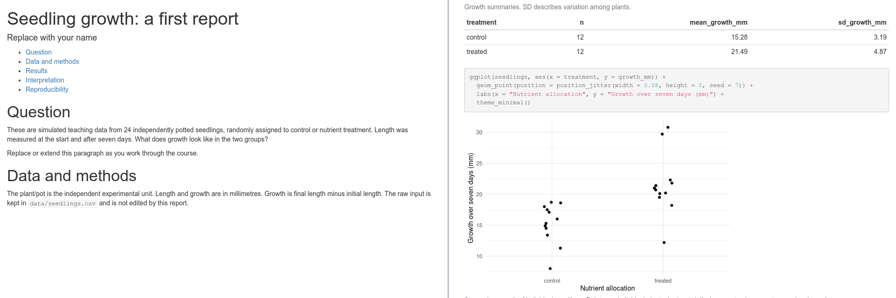
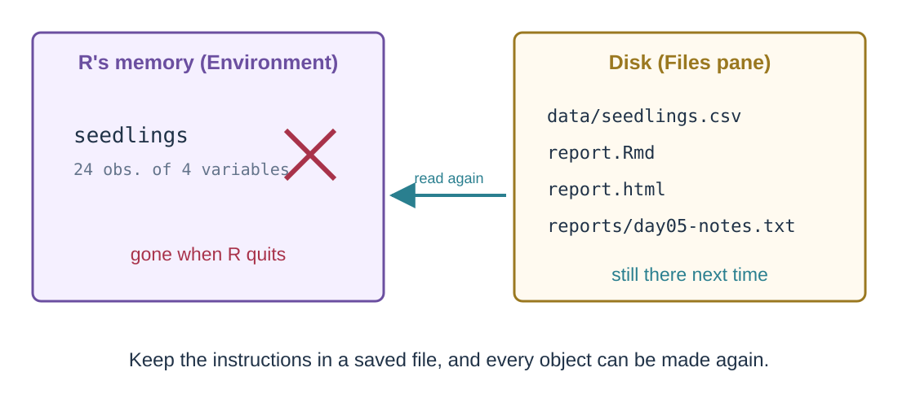

You now have 24 seedlings in a file. Did the treated ones grow more? A spreadsheet can answer that once. But you will measure again next season, and your supervisor will ask how you got the number. From next week, R does the calculations and keeps the instructions, so the answer can be made again.
Today you will:
open the course project in RStudio and find your way around its window;
tell the R Console apart from the terminal;
run a first calculation and a supplied plot;
watch a finished report being made from saved files.
This is an orientation day. Day 6 explains R step by step.
Two programs: R and RStudio
R calculates.
RStudio is the window you work in. It starts R for you.
Four panes: Editor, Console, Environment, Files / Plots / Help.
The Editor shows saved files. The Console is a conversation with R.

RStudio has four panes: the Editor for saved files, the Console where R runs instructions, the Environment listing objects in memory, and Files, Plots and Help.
Open the course project
Open your extracted introcomputing-course folder.
Double-click introcomputing.Rproj.
Top right should say introcomputing.
R now works inside this folder, so data/seedlings.csv is found: the relative paths from Day 2.

Double-clicking introcomputing.Rproj opens RStudio with the course folder as working folder; getwd ends in introcomputing-course and file.exists for data/seedlings.csv is TRUE.
Console or terminal? Look at the prompt

The R Console answers 44.3 minus 25.7 with 18.6 but does not know pwd; the shell knows pwd but answers 44.3 minus 25.7 with command not found.
> waits for R. $ waits for the shell. An error in the wrong window means move the instruction, not the computer is broken.
A first calculation
In the Console:
44.3-25.7
[1] 18.6
P01 grew from 25.7 mm to 44.3 mm: 18.6 mm.
[1] marks the first value printed. It is not part of the answer.
A + prompt means R waits for the rest. Finish the line, or press Esc.
seedlings appears in Environment: 24 obs. of 4 variables.
Up is final length, not growth.

Scatter plot of final against initial length for the 24 simulated seedlings, one point per plant.
Where we are heading: a report

A rendered HTML report: title and question with data and methods on the left; a table of growth by group and a plot of individual plants on the right.
Open report.Rmd and click Knit. R runs the saved instructions on data/seedlings.csv and writes report.html: question, code, table and plot.
Memory goes, files stay
Save a note as reports/day05-notes.txt.
Quit RStudio; reopen through introcomputing.Rproj.
The Environment is empty. seedlings is gone.
The note, report.Rmd and report.html are still there.

The seedlings object in R’s memory is gone when R quits, while data/seedlings.csv, report.Rmd, report.html and the saved note remain on disk and can be read again.
That is why we will save instructions in files: Knit again and everything comes back.
Summary
R calculates; RStudio is where you work.
Open the course through introcomputing.Rproj so data/... paths work.
> is R (Console); $ is the shell (terminal).
Objects live in memory; files are saved on disk.
A report is rebuilt from saved instructions and data with Knit.
Next (Day 6, R basics): calculations, named objects and vectors, saved in a script.
Now:open the Day 5 exercises. Leave with reports/day05-notes.txt, and report.html if Knit worked.